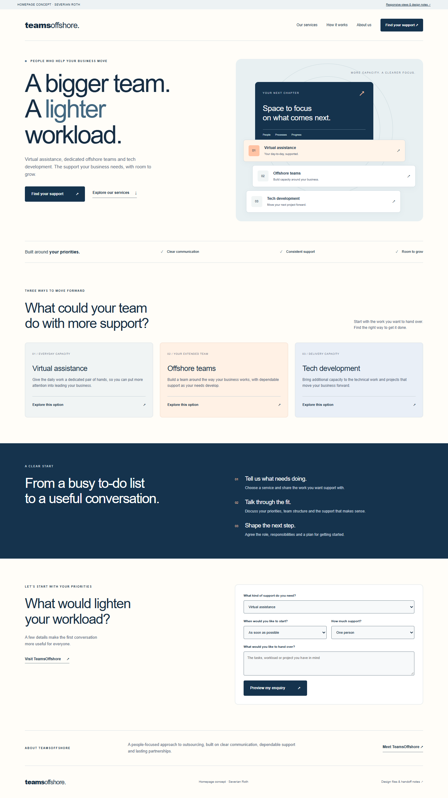
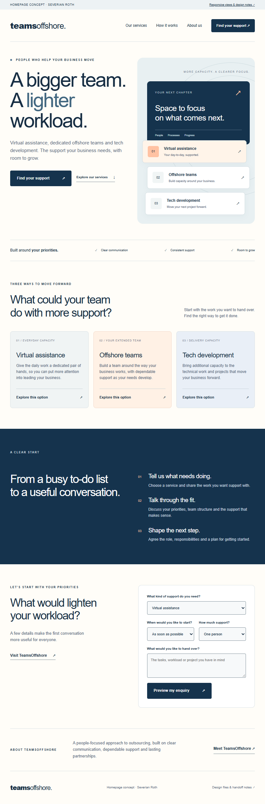
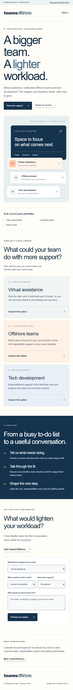

Homepage / desktopView at full size ↗
{kind=link}

TEAMSOFFSHORE / HOMEPAGE DIRECTION
A clearer path from “what can I hand over?” to the right support. The navy and warm peach direction gives the three services a shared identity, while service-specific links carry a visitor's choice straight into their enquiry.
The navigation and hero keep “Find your support” visible at laptop size. Secondary links invite visitors to explore the service that fits their workload.
Choosing a service pre-fills the enquiry. Timing, capacity and priorities turn that interest into a conversation with context.
All copy remains editable text. The illustration uses CSS and text; there are no image-based headlines, external fonts or large hero downloads.



Navy
#15334D · CTAs / feature block
Ink
#162D43 · headings / text
Slate
#526477 · supporting copy
Warm peach
#FFC2A3 · accents
Paper
#FFFDF8 · background
A bigger team.
A lighter workload.
Arial / Helvetica / sans-serif. Clear, editable typography with a familiar rhythm.
Primary buttons use white text on navy with a 4 px corner radius. Text links keep the action prominent without competing with the primary step.
Direction arrows, simple check marks and 01 / 02 / 03 service markers form the icon system. The hero's capacity illustration stays editable in HTML and CSS.
Keyboard focus receives a visible outline. Reduced-motion preferences remove smooth scrolling.
Header → hero and service shortcuts → working principles → service cards → three-step process → enquiry → about → footer.
The layout uses two main breakpoints at 1050 px and 650 px, with fluid widths between them. The header becomes a menu button on smaller screens.
The six service links pre-select a service. The enquiry produces a plain-text summary of service, capacity, timing and priorities; editing a field clears the old preview.
The current site uses Wix. The source and tokens provide the implementation reference: map each section to a Wix section, retain native editable text, and connect the approved enquiry to Wix Forms. The existing appointment route can remain the secondary contact option.
The supplied demo previews an enquiry locally. Connecting the live form, setting the recipient and confirming the final copy are part of the implementation handoff.
Responsive HTML/CSS/JavaScript, desktop/tablet/mobile PNG views, this style sheet and detailed handoff notes. Open index.html to preview; no build process is required.
Concept by Severian Roth for TeamsOffshore. Service names and business context come from TeamsOffshore's published website. The proposed layout, illustration and copy hierarchy are original.
{kind=link}
{kind=link}